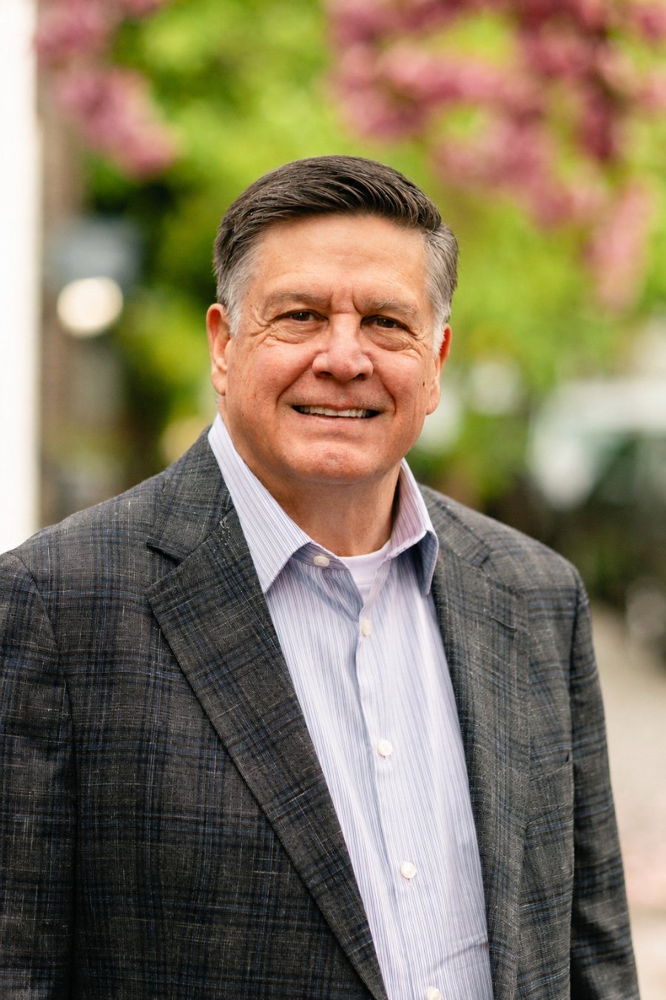

— Endorsed by Northwest Oregon PACMark Norman.
From military service to caring for animals and serving his community, Mark Norman has built a career around helping others, and now he's ready to bring that same commitment to Salem.
Paid for by Northwest Oregon PAC · #25045
northwestoregon.com